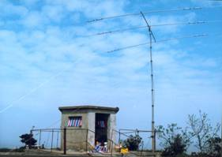
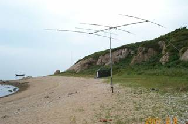

嵊山岛位于浙江省的东北部，嵊泗县的最东端，全国著名的舟山渔场中心，位于北纬30°43'，东径122°49'，居长江和钱塘江入海口交汇处，是全国1.8万公里海岸线的中心点，是国家一级渔港和二类开放口岸。嵊山镇由大小51个岛屿组成，海岸线总长19.3公里，嵊山镇南面深水线3.7公里，水深10-15米。为马鞍列岛最大锚泊地，可避西－东北风8－10级，附近海域有国际航道2条，县境水道19条。全镇陆地总面积为7.79平方公里，海域面积2900平方公里。常年流动人口1600余人。
嵊山岛位于浙江省的东北部，嵊泗县的最东端，全国著名的舟山渔场中心，位于北纬30°43'，东径122°49'，居长江和钱塘江入海口交汇处，是全国1.8万公里海岸线的中心点，是国家一级渔港和二类开放口岸。嵊山镇由大小51个岛屿组成，海岸线总长19.3公里，嵊山镇南面深水线3.7公里，水深10-15米。为马鞍列岛最大锚泊地，可避西－东北风8－10级，附近海域有国际航道2条，县境水道19条。全镇陆地总面积为7.79平方公里，海域面积2900平方公里。常年流动人口1600余人。
业余电台活动始于二十世纪初，1925年在法国巴黎成立了国际性的组织――国际业余无线电联盟（IARU）。IARU已约有（包括中国在内）126个成员国（地区），业余电台的数量近300万部。中国无线电运动协会个人会员已超过一万人，领取各级业余电台操作证书的会员有四千多；已通过四级以上考试，办理电台执照，开设了业余电台的有两千多人，集体电台150多个。
无线电运动在我国自五十年代开展以来，以体育的姿态，展现了文化、科技、教育、娱乐等方面的色彩，为贯彻“科教兴国”的战略方针，在落实素质教育中发挥了很好的作用。为“全民健身”充实了更丰富的内容。这项运动在推动无线电技术的发展，培养无线电技术人才，紧急情况下为社会提供服务，增进国际友谊等方面都作出了很大的贡献。为此，这项运动被各国，尤其是发达国家所重视。
江泽民总书记和朱容基总理都十分关心业余电台活动，江泽民曾题词“把上海市青少年业余无线电通讯活动开展好。”在他们的关怀下，上海青少年的业余无线电活动蓬勃开展，在全国起到了带头作用。他们学会了用英语联络，用莫尔斯电码联络，还学会了通过计算机做图像通信及其它无线电试验等。我省有关领导和有关部门也非常关心无线电运动事业的发展，省人大副主任徐志纯同志（徐志纯同志是省无线电运动协会名誉主席），他在省无线电运动协会成立时，亲笔致信祝贺协会的成立，祝省无线电运动协会不断壮大，并取得更大的成绩。
开展这项活动（包括无线电测向、电子制作、电子模拟探雷等活动），对促进精神文明建设、物质文明建设和全民健身，丰富人民文化生活，落实素质教育，提高全民文化和身体素质，科教兴国，培养无线电技术人才，加强爱国主义教育，培养国防后备力量，扩大国际交流，宣传我国改革开放政策和成果，让世界了解浙江，让浙江走向世界都有着十分重要的意义。
我们真诚地希望社会各界能关注、关心和支持我省无线电运动事业的发展。我们将不断地努力工作，为我省创建文化大省，经济大省作出积极的贡献。
浙江省无线电运动协会于7月21日到7月29日组织中国移动通信业余电台嵊山岛远征队前往舟山群岛嵊泗县嵊山镇的嵊山岛设立海岛特设业余电台BI5H，参加英国无线电协会主办的IOTA竞赛，并参与日本《CQ Ham Radio》杂志主办的环亚V/UHF传播测试活动。
IOTA（Islands On The Air）是英国的大不列颠无线电协会RSGB（Radio Society of Great Britain）管理的一种业余无线电活动，它按照经确认的通信量而发行多种岛屿通信奖状。它的字面意思就是让海岛在空中出现，也就是指到海岛上去架设业余电台，与全世界进行通讯联络活动。对于整天在混凝土森林里忙碌的业余电台爱好者，既可以到海岛上考验自己的野外操作能力， 又可以到海岛上吸收新鲜空气，同时享受一下海水沙滩阳光大自然，IOTA岛屿通信是一样一举两得的好活动。
IOTA组织把世界上的岛屿划分成许多的“岛屿群”，对曾有业余无线电爱好者在岛上进行过一定数量的业余无线电联络的岛屿进行编号。如轰动一时的黄岩岛(BS7H)的野外通信也使黄岩岛获得AS-116的岛屿通信参考号码。我国拥有漫长海岸线及丰富的海岛资源正适合进行IOTA的活动。
一九九八年，IOTA活动在中华大地上沸腾起来，同时也已开始引起国际业余无线电界的关注，很多国际上著名的火腿对我们的活动给予了鼓励和好评。
1998年4月开始，先后有北京的爱好者去河北省境内的渤海石臼坨（BI3H）， 江苏的爱好者去连云港附近的平岛（BI4Q），北京的爱好者到上海长兴岛（BI4C）、浙江舟山岛（BI5Z），福建的爱好者到福建省平潭岛（BI5P），广西的爱好者到广西涠洲岛（BI7W），给国内外“岛迷”们提供了许多机会。1998年英国无线电协会IOTA委员会授予CRSA 1998年最杰出IOTA DX远征奖，并衷心地祝贺和感谢中国爱好者所做的工作。1999年北京、江苏和广东三地的爱好者联合组队到浙江的洞头岛进行迄今规模最大、影响最大的远征。2001年北京和广东的爱好者甚至前往越南的岛屿进行远征活动。
浙江省是海洋大省，拥有漫长的海岸线和丰富的海洋资源。从1998年至今，在浙江所辖的海岛上已经进行过BI5Z（舟山沈家门）、BI5Y（大洋山）、BI5X（小洋山）和BI5D（洞头）四次大的远征活动。但是令人遗憾的，由于浙江省的业余电台发展水平的限制，所有这些活动，都不是由浙江的业余电台爱好者组织的，甚至浙江的爱好者都无缘参与。
因此2001年浙江省无线电运动协会成立以来，就一直努力克服各种困难，积极创造有利条件，争取在浙江的岛屿上留下我们浙江爱好者自己的名字。
与以往的远征活动不同的是，本次远征的目标在于参加一年一度的IOTA竞赛及环亚V/UHF远距离通讯测试，并力争取得好成绩。
IOTA委员会为了鼓励海岛通讯活动，年年举办IOTA竞赛，是全球业余电台界知名的活动。每当竞赛时，往往有众多的远征队深入一些平时没有电台的海岛设台工作。而全世界众多的业余电台爱好者，也往往会在这个时候守候在海岛通讯频率上，期望获得难得的海岛电台的联络机会。
IOTA竞赛的日期是每年7月的最后一个周六、日，时间从星期六的UTC12：00到星期天的UTC12：00，计24小时。竞赛以联络到的海岛电台的数量和字头记分，获得好的分数进入IOTA竞赛排行榜是全世界业余电台爱好者莫大的荣誉。因此在那24小时之内，全世界业余电台的目光，都会关注在为数不多的海岛电台上，关注在我们嵊山岛远征队上。我们将成为全世界业余电台追逐的目标，我们的成就将被永远纪录在IOTA的荣誉榜上。
V/UHF波段，特别地指业余无线电的2米（144-146MHz）和70厘米（430-440MHz）波段，一般地被认为是视距传播，只适合做本地联络之用。但是在诸如大气波导、Es层电离层、流星余迹等现象的作用下，V/UHF波段还是有可能做几百甚至上千公里的远距离通讯的。特别在夏季，上层空气和下层空气的温度差较大，使得空气的密度产生差别，电波在不同密度的空气中传播就会产生折射，若上层空气冷，下层空气热（通常情况），电波就会弯向上，反之，点播就往下弯，这是就发生超视距的传播情况。上下层是冷空气，中间夹着一层热空气，电波就会在上下两层来回反射传播形成所谓“波导传播”，电波可以极小衰减地传播到几千公里！因此夏季是试验V/UHF远距离传播的最好时机。
日本的《CQ Ham Radio》杂志是日本业余无线电联盟JARL(Japan Amateur Radio League)的机关刊物，在日本和世界各地有几十万读者。每年7月的最后一个周末，该杂志都会主办环东亚的2米及70厘米波段远距离通讯试验活动。活动会吸引日本各地众多的爱好者参加，也每年都邀请韩国、俄罗斯远东地区和我国台湾地区的爱好者参加，一起来试验V/UHF波段的远距离传播。试验的结果，在《CQ Ham Radio》上公布，而杂志社每年都会选取有特色的队伍，进行详细的报道。
中国大陆的爱好者从去年开始参与这项活动，还没有取得好的成绩。
嵊山岛位于浙江省的东北部，嵊泗县的最东端，全国著名的舟山渔场中心，位于北纬30°43'，东径122°49'，居长江和钱塘江入海口交汇处，是全国1.8万公里海岸线的中心点，是国家一级渔港和二类开放口岸。嵊山镇由大小51个岛屿组成，海岸线总长19.3公里，嵊山镇南面深水线3.7公里，水深10-15米。为马鞍列岛最大锚泊地，可避西－东北风8－10级，附近海域有国际航道2条，县境水道19条。全镇陆地总面积为7.79平方公里，海域面积2900平方公里。常年流动人口1600余人。
嵊山镇属典型的北亚热带海洋季风区，历年平均气温15-17°C,极端高温36.7°C,极端低温为零下7°C。年日照时数1940.6H,年平均相对湿度81%,年降水量1072.5mm,年平均风速7.2m/s，东北东风系常年导向风。区域海区为浅海正规半日潮，全年潮位以八、九月份最高，二、三月份最低，潮差１米以上，平均高潮位1.41米，多年平均低潮位-1.15米，潮流流速为1-4节，波浪0.8-1.2米，台风过境波高近7米,海水温度平均16°C左右，盐度为29.37‰，海水透明度3米以上。
嵊山镇是典型的海岛渔区，全省著名的渔港重镇，经济区位优越，海洋资源丰富。嵊山渔场是全国最大渔场之一，有天然鱼库之称。岛上有集体和私营水产品加工企业135家，有水产冷库20座，全镇共有530家个体工商户，14家旅社,21家美容美发，40家饮食业。全镇的基础设施不断完善,五十年一遇3.8公里标准海塘贯穿南北岙口;岛上建有大小水库8处,蓄水量20多万立方米,日供水500吨的自来水厂一座，于97年投资610万元建有全国首家500吨级海水淡化站。
嵊山镇邮电、通讯事业蓬勃发展，电力保障，设施完善；海上交通日益发达，与全国沿海各地区均有货运航线，开通了县城与嵊山的高速豪华客轮嵊翔2号，嵊山与沈家门的隔日班奇观轮。拥有水产、石油、客运等专用码头13座，岛上文化、教育、卫生、体育、广播等机构齐全，设施完善。
远征和竞赛都是对爱好者综合素质的全面考验，也最能反映操作者各方面的能力。这次，远征队将试图把远征和竞赛结合到一起，给自己创造更强有力的挑战。
我们也清醒地看到，我们的活动与国际先进水平相比还有很大的差距。我们的操作和组织水平还有待进一步提高，我们的活动还存在操作时间短，联络电台数量少的问题；通信设备的数量和质量以及远征活动的后勤组织工作也还需要提高和改善。在我们的心里都亟盼着使我们的远征活动尽快达到国际水平，为此我们必须团结各方面的力量、多作尝试，广积经验。
我们事先根据活动期间电离层的情况和电波传播的发展趋势，经详细分析后规划、绘制的频率分配表和使用时间表。为了使每一位远征队员在活动中不会因为忘记或缺少什么信息而影响协同作战， 我们将最后定稿的活动计划和重要信息编成这本《BI5H远征手册》。人手一本，无论是频率时间安排、分组分工、设备配置、卡片管理、传播预测还是远征队守则、生活管理，凡是需要明确的事项，无不清楚地列于其中，随时可以查考。
队长: 王伟
秘书: 程坚
操作员: 翁恺BD5HAG、方向BD5HAM、陈嵩BG4AHZ、 徐晓寅BD5HAA、周振亚BD5HMA、吴钧BG5HAR、陈红兵BG5HBC、贺洪波BD5CAG、梁铁威BA7NQ、杨德豪BA7JA、李琨BG7IEE
网站: 官学彬、尤佳
后勤: 蒋丽华、潘晓萍
新手：马荣、詹干红、虞俊、杨浩
贺洪波于22日凌晨3点到泗礁岛，梁铁威、杨德豪和李琨于24日夜到杭州，其余17人均为第一批上岛。
设备于20日晚全部在香港城准备好，21日早上9点从香港城出发。约14点到达上海芦潮港，乘坐14点30的快船，约16点到达泗礁岛。 在泗礁岛住宿一晚，于22日早上7点半乘坐嵊翔2号于9点到达嵊山岛。
回程于29日早上9点乘嵊翔2号于11点到达泗礁，然后乘坐13点的船回芦潮港，约14点半到，然后乘坐包车回杭。
在嵊山岛设三个电台，1号和2号是比赛用台，3号为训练用台。1号台在山上的凉亭，2号台在边防站，3号台在海洋站。1号台与2、3号台之间间距700余米，2号与3号之间间距500余米。
大家应该理解，在省协会的努力和当地政府的大力支持下，我们才得以在边防站、海洋站这样的场所内架设临时电台。因此，我们应尊重主人，尽量避免过分影响主人的工作、生活，特别是在边防站内。应注意不大声喧哗，主动处理生活垃圾，使用耳机，包括对讲机。
1号台设在凉亭，使用的器材如下：
设备 型号 来源 备注 电台 IC706MKII 翁恺 电源 线性电源 方向 功放 FL2100 梁铁威 18日前到杭 天线 318jr 翁恺 天线 30/40/80米DP 梁铁威 18日前到杭 天线杆 12米军用伸缩杆 梁铁威 18日前到杭 电缆 50-5（15米） 电缆 50-5（15米） 耳机 AZDEN 翁恺 电脑 徐晓寅 CT接口 翁恺 电源板 翁恺 台灯 翁恺 帐篷 陈嵩 防潮垫 陈嵩
2号台设在边防站，使用的器材如下：
设备 型号 来源 备注 电台 FT847 翁恺 26日前SSB 电台 FT900 杨德豪 26日到现场 电源 开关电源 翁恺 短波天线 A3S 梁铁威 18日前到杭 天线杆 水管 当地购买 电缆 50-5（10米） 周振亚 耳机话筒组 陈嵩 脚踏开关 梁铁威 电脑 方向 CT接口 翁恺 电源板 翁恺 台灯 翁恺
3号台设在海洋站，使用的器材如下：
设备 型号 来源 备注 电台 TS450 周振亚 电源 开关电源 陈嵩 短波天线 R6000 翁恺 短波天线 730V 徐晓寅 天线杆 10米军用支杆 吴钧 电缆 50-5（15米） 电缆 50-5（15米） 电脑 虞俊 CT接口 周振亚 电源板 翁恺 台灯 翁恺
四号为机动队，在27日V/UHF测试开始时才出发临时设台，4号的设备有：
设备 型号 来源 备注 电台 FT847 翁恺 26日前2# 6米天线 A50-5 翁恺 VHF天线 十字27单元 梁铁威 18日前到杭 UHF天线 十字35单元 梁铁威 18日前到杭 电缆 50-7（10米） 电缆 50-9（10米） 天线杆 8米军用杆 梁铁威
MFJ 259B天线分析仪 天线工具箱三个，包括 活络扳手一把 螺丝刀一套 尖嘴钳 斜口钳 电烙铁 焊锡 胶布 防水绝缘胶布 尼龙扎带 维修工具箱 万用表 电烙铁 尖嘴钳 斜口钳 镊子 焊锡 松香 备用线 软盘三张
编号 内容 体积 重量 负责 1 FT847 翁恺 2 TS450 周振亚 3 线性电源 方向 4 FL2100 翁恺 5 318jr 翁恺 6 A3S 翁恺 7 A50-5 翁恺 8 30/40/80DP 翁恺 9 V/UHF天线 翁恺 10 730V天线 徐晓寅 11 12米伸缩杆 翁恺 12 10米立杆 吴钧 13 8米立杆 翁恺 14 50-5电缆5卷 翁恺 15 50-7电缆1卷 翁恺 16 50-9电缆1卷 翁恺 17 工具箱1、2 翁恺…其余装备由个人负责携带。
7月21日16点到达泗礁岛，入住影苑饭店，即在其电影院的屋顶上架设R6000，使用IC706MKII工作。架设天线由BD5HMA负责，BG5HBC协助。电台由BD5HAG负责。在泗礁的设台，大本营就要开始工作，并且两人要轮班，为嵊山岛上活动打下基础。
7月22日凌晨5点开始拆除天线。
7月22日上午9点半到达嵊山岛，入住永红饭店。然后同时架设1#的318jr，2#的A3S和3#的R6000，分工如下：
1#和2#的yagi装配完成后，先不急于上杆，由一人举起，用259测试后，调整到SWR为2左右，再上杆。
12米伸缩杆的架设要领是：先让升杆处于完全收缩的状态，在架设环境周围寻找柱子、围栏等可以固定升杠的物体。
如图，就是把升杆固定在围栏的上。可以用钢丝、绳子捆牢，在绿色包里面，有几个大大号的不锈钢喉箍，就是用来固定升杠用的，一个不够大的话，可以用两个延长拼接成一个更大的。
除了杆子要拉飞绳外，天线也要拉，在一头一尾各拉一到两根，用于固定天线不被分吹改变方向，同时也是用来人手改变天线的方向用。
如果找不到固定的物体，那么只能用平地架设的方法。
升杆上有两个地方可以固定拉绳，总共可以拉两层共六条拉绳。但平地架设最好加多一层，就是说在最底下那节也拉飞绳。首先，用底下的那层拉绳把杆子固定好，然后把天线装装上。这时候可以升起杆子，要慢慢升起，升起的过程中，其他人拉住非绳，保持杆子平衡。杆子最长是12米，但一般情况下，升到8米的样子就好了，不要用尽了。
升杆升起来的时候，要用一把手柄，手柄在绿色的包里面。首先，把手柄装上，拧松绞轮的保护螺栓，拧松之后，螺栓旁边的钩子可以自由活动，这个钩子会自然锁定，锁定之后，绞轮是转不动的。保护螺栓放松之后，就可以用手柄把升杆摇起来，在这个过程中，升杆的钢丝会被卷进绞轮里面，升得越高，收起来的钢丝越多，这这个过程中，要人为有意识地让钢丝一层一层地收起来，而不要随意乱卷。升到理想高度后，把钩子放下，把保护螺栓拧紧就可以了。
成品天线只需要按照图纸上个的尺寸安装，就可以获得需要的谐振频率，不需要调整。
在安装的时候，大管套小管，千万不要拧，只能顺着拉出来或插进去，否则容易造成管子咬死，最后进不去，也出不来。
22单元的VHF Yagi的天线接头是M头。
要领：收发机器先用小功率或半功率输出，先把波段开关调整到对应的波段，反复调整Loading和Plate，让电压最小，FWD功率最大。
1#台主要做CW，采用电脑SD软件配合电台工作，主要操作员为翁恺、方向、梁铁威；2#台主要做SSB，主要操作员为徐晓寅、陈嵩、杨德豪；3#台主要做新手训练及国内联络，由周振亚负责，主要操作员为周振亚、吴钧、马荣等。
3#台应注意收听UHF网络上1#和2#公布的当前工作频率，必要时可向大本营询问。3#必须选择1#、2#不使用的频段工作，建议使用WARC频段、6米和40米国内联络频率。3#还应经常在各个频段搜索，听到信标台信号或发现传播开通迹象，应及时向1#、2#报告。
所有的台在HF工作时，只采用主动呼叫的方式。在确定了呼叫的频率、方式（包括是否异频操作）后，立即通过UHF网络通知大本营，由大本营负责在网站和DX Summit上发布。
1#台和2#台强制采取分时段工作，工作的时段分配为（北京时间）：
每班安排一名正式队员和一名新手共同值机。
3#台的时间由周振亚安排。
这次比赛我们使用SD作为Log，正常的IOTA操作使用SDX程序，IOTA比赛使用SDI程序。
SD可以在Win98/2000下运行。但是如果需要操作CW模式的话，必须在DOS模式下（用软盘启动DOS），否则SD不能够控制串口。SD的控制电路和CT的基本一样，注意，SD是用串口DTR输出的。
使用前，先把电脑的时间和日期改为UTC时间。
在Win2000下运行SD，首先，找到SDX.exe或SDI.exe文件，按鼠标右键盘，在属性菜单里，找到EMS内存的设置，改为4096K，然后双击就可以运行。
要记录一个电台很简单，只需要输入他的呼号，然后回车就可以了。但如果是比赛的时候，除了输入对方的呼号，还要输入流水号，这时候，先输入呼号，然后按空格，在输入流水号，按回车。
其他基本操作命令：
ALT+H，获得再线帮助 C，转换为CW模式 S，转换为SSB模式 20C，转换为20m CW模式 20S，转换为20m SSB模式，如此类推，转换到10米波的SSB，就输入10S END、QUIT，退出程序 PORTS，设置串口参数
CW的设置方法为在CW的状态下，按F1-F8会发送预先设置好的内容，按Shift + F1 �C F8可设置内容。设置的时候，有以下宏定义字符
#R，自己的呼号 #C，对方的呼号，也就是说你当前输入的呼号 #T，RST，默认是5NN
其他内容看SD的手册，（ http://www.ei5di.com/sd/ ）。
例如，F3设置的内容是：#C #T，那么，按下F3，计算机自动发出对方的呼号+5NN的内容。
SDCheck.exe是LOG检查程序，可以用来导出ADIF数据。
使用435.10MHz/FM工作。不设基地电台，在1#台和2#台的值班新手，必要时可以起QSP作用。在1#和2#的值班新手，要负责为值班队员传递信息。
离开住地或工作点，必须通过对讲机向大本营的网站工作人员报告。
大本营由官学彬和尤佳负责。主要任务为：
我们一共是要参加两个比赛，一个是IOTA，一个是V/UHF测试。
IOTA是27日的UTC1200到28日的UTC1200；V/UHF测试是27日的UTC0300到28日的UTC0300。
IOTA竞赛是在HF上进行，由主力队员进行操作。V/UHF测试由新手进行。
IOTA竞赛采用三部电台。设置三部电台是为了在规则允许的范围内，把得分的机会增加到最大。比赛时1#为Running Station，2#为Multiplier Station，3#为listen station。
Running Station是比赛的主叫台，这个台的任务是选择合适的频段，在其上发出CQ CONTEST的呼叫，并回答其他电台的回答。操作员在操作这个电台的时候应遵循“尽可能多与其他电台联络”的原则。这个台着重增加比赛的基数分，一般不需考虑系数（字头）的增加，除非在守听台要求的情况下，可在同一频段的其他频点呼叫其他属于新系数的电台，但应注意时间的把握。主叫台在工作的时候应注意以下几点：
Multiplier Station的责任是捕获尽可能多的IOTA岛屿。通过守听台的导引（通过需求列表 wanted list）和自己的寻找，发现有新的岛屿之后尽一切可能与其取得联络。依据规则系数台不能与主叫台在同一频段上工作，而且在任何情况下都不能发出CQ或者QRZ的呼叫，也就是说，这个台只能被动地回答别人的呼叫，而不能够自己主动呼叫。如果说主叫台是基础的话，系数台和守听台一起互相配合，就是比赛成绩提高的关键。
Listening Station是专门用于守听的电台。根据规则，岛屿电台最多只能设立两部收发机。因此这个电台在任何情况下都不能发射信号。由于规则没有规定收信台的数量，所以这个守听台是符合规则的。守听电台的任务同其他两个台一样繁重：监听所有频段、监视DX SPOT、寻找已宣布的操作、制作Wanted List、给主叫台传播建议等等。不要因为这是一个收听台而认为他可有可无或是微不足道。事实上，正是由于他的存在而大大提高了系数台的工作效率和联络成功率－系数台从监听的工作中解脱出来，将精力集中在呼叫可能得到的新系数上。
电台呼号：BI5H IOTA岛屿编号：AS137 地理位置：东经122°808091，北纬30°720419，LOC：PM10JR IOTA频率： CW：3350、7020、10115、14040、18098、21040、24920、28040 SSB：3755、7055、14260、18128、21260、24950、28460、29560 QSL Info：via BD5HAG DX Summit：http://oh2aq.columbus.com/dxs 工作联络频率：435.10/FM